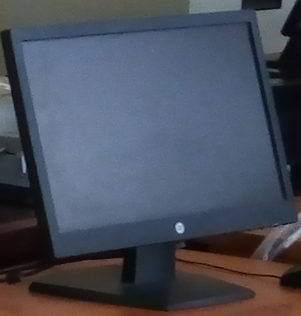
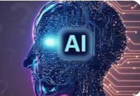

Home
Library Resources
Databases
E-Books
E-Journals
About us
Quick information
Our services
Contact us
E-Books
Networking and Cloud Computing (NCC) Department

Networking Essentials
Virtualization and Cloud Migration
Operating System for Network Environment
Wireless Communication Systems
Computer Architecture
Python Programming Basics
Artificial Intelligence
Mobile Wireless Security
Routing and Switching I
Cloud Computing I
Advanced Statistics for Computing
Advanced Wireless Networks
Machine Learning
Data Protection and Privacy
Research Methodology
Project Management in Networking & Cloud Computing
Routing and Switching II
Networking Troubleshooting and Monitoring
Cloud Computing II
Enterprise Networking, Security and Automation
Ethical & Professional Practice in Networking and Cloud Computing
Internet of Things (IOT)
LIS Department
Foundations of LIS
Cataloguing
Basic Reference Tools & Services
History of Libraries
Book Production Processes
Classification
Sociology of Library and Information Sciences
Basic Computer and Operating Systems
Introduction to Information & Communication Technology (ICT)
Compilation of Bibliography, Indexes and Abstracts
Cybersecurity Department
Information Security and Policy Development
Networking Essentials
Operating Systems Security
Cyber Diplomacy and International Cooperation
Mathematics for Cybersecurity
Application Security
Mobile and Wireless Security
System Security & Design
Technical Report writing in Cybersecurity
Project Management in Cybersecurity
Research Methodology in Cybersecurity
Ethics and Professional Practice in Cybersecurity
Data Protection and Privacy
Cryptographic Application
Cybersecurity Tools and Technology
Software & Web Development Department
Operating System
Database Design
C++Programming
Operations Research
Data Communication and Networks
Introduction to Software Engineering
Computer Architecture
Artificial Intelligence
Python Programming
Database Design II
Front End Development
Back End Development
Advanced Statistics for Computing
Research Methods in Software Development
Project Management in Software Development
Embedded System Development
Front End Development II
Back End Development II
Software Design & Architecture
Advanced Data Structures & Algorithms
Human Computer Interface
Ethical & Professional Practice in Software Development
Software Testing & Quality Assurance
Security in Software Development
Artificial Intelligence Department

Computer Architecture
Python Programming Language
Artificial Intelligence
Theories of Computation & Algorithm
Mathematics & Statistics for AI
Ethical & Professional Practice in AI
Machine Learning
Computer Vision
Data Science for AI
AI Development Framework
Neural Computation & Bioinformatics
Neural Language Processing
Research Methodology in Artificial Intelligence
Deep Learning
Soft & Quantum Computing
AI Computing solutions
AI Project Management
Network Security for AI
Robotics & Intelligent Systems
Web & Mobile Application Development
Electrical & Electronics Engineering Department
Numerical modelling & design of Electrical Machines
Fundamentals of Electronics
Unifying Electrical Engineering & Electronics Engineering
Business Administration Department
Business Management
What is Business Administration
Business Admin Major
Business Admin
Science & Laboratory Technology Department
Introduction to Science and Laboratory Tech
More on science Laboratory Technology
Food Technology Department
Food Technology and Biotechnology
Food Technology
Food tract
Biotechnology
Office Technology Management Department
Office Technology Management
More on Office technology management
more E-Books